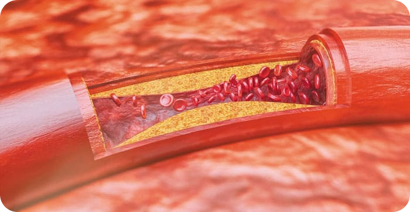

Setelah melakukan pembersihan pembuluh
darah, hipertensi dan 9 penyakit
"tak tersembuhkan" lainnya, lenyap !

02.05.2022
|5 091
Semua orang tentu tahu bahwa tekanan darah tinggi, stroke dan serangan jantung merupakan konsekuensi dari "terkontaminasinya" pembuluh darah dengan kolesterol. Penyakit kardiovaskular. Tapi, hanya sedikit orang yang menyadari bahwa 9 dari 10 penyakit kronis yang tak tersembuhkan ini terjadi akibat pembuluh darah yang "kotor".
Sakit kepala, tekanan darah meningkat. Sendi, leher dan punggung terasa kaku, nyeri dan berderak. Di malam hari, kaki membengkak, dan di pagi hari, hal yang sama juga terjadi pada wajah. Telinga sering berdengung. Jari-jari terasa mati rasa dan anggota tubuh lainnya terasa dingin. Penglihatan memburuk. Daya ingat menurun. Merasa tidak cukup kuat untuk melakukan aktivitas apa pun. Kebanyakan orang akan menganggap semua gejala ini sebagai sesuatu yang wajar akibat bertambahnya usia. Tapi, mereka jelas salah.
- Mengapa pembuluh darah yang bersih menunjang 90% kesehatan tubuh Anda ?
- Selain kolesterol, apa saja yang bisa membuat pembuluh darah terkontaminasi ?
- 4 Gejala utama dan 7 gejala umum memburuknya kondisi pembuluh darah
- Bagaimana cara membersihkan pembuluh darah dengan aman tanpa harus keluar rumah ?
Semua pertanyaan ini akan dijawab oleh kepala Departemen Bedah Vaskular Fakultas Kedokteran Jakarta. Profesor, M.D., ahli bedah saraf, salah satu Dokter Kebanggaan Indonesia, Tendy Haryono.
Dokter Tendy Haryono telah melakukan lebih dari 11.000 operasi otak terbuka, dan pasien termudanya bahkan ada yang baru berusia 2 hari.
Dokter Tendy Haryono mampu menjelaskan proses medis yang kompleks dengan kata-kata yang sederhana dan mudah dipahami. Beliau juga telah menerbitkan 47 buku ilmu pengetahuan dan panduan penelitian untuk orang-orang awam. Beliau sangat yakin bahwa 90% kesehatan tubuh dan kesejahteraan hidup kita tergantung pada bagaimana cara kita menjaga pembuluh darah kita tetap bersih dan lancar.
Mengapa pembuluh darah yang bersih menunjang 90% kesehatan tubuh Anda ?
Dokter Tendy, mengapa Anda sangat yakin bahwa pembuluh darah yang bersih menunjang 90% kesehatan tubuh kita ?
Coba jawab pertanyaan ini, apa organ terbesar dalam tubuh manusia? Kebanyakan orang tidak tahu jawabannya, dan bahkan mahasiswa kedokteran pun juga masih sering salah dalam menjawabnya. Kebanyakan orang pasti akan menjawab, otak dan hati. Mereka yang lebih berpendidikan mungkin akan menjawab, lapisan kulit. Faktanya, organ terbesar dalam tubuh manusia adalah sistem pembuluh darah.
Anda bisa
membungkus bumi ini hingga 2,5 kali lipat hanya dengan menggunakan pembuluh darah seseorang.
Bayangkan saja. Jika kita "menguraikan" semua pembuluh darah yang ada dalam tubuh manusia dan mengkaitkannya menjadi satu tali yang panjang, maka panjangnya akan mencapai sekitar 100.000 kilometer.
Sebagai perbandingan, panjang khatulistiwa bumi hanya sekitar 40.000 kilometer. Jadi, "tali" pembuluh darah 1 manusia bisa digunakan untuk membungkus bumi ini hingga 2,5 kali lipat.
Sungguh luar biasa, bukan?
Pembuluh darah bukanlah hanya sebuah wadah tempat darah kita mengalir, tapi juga merupakan salah satu organ tunggal yang kompleks, yang sangat memengaruhi kesehatan tubuh kita secara keseluruhan.
Pembuluh darah kaki terkena Varises vena - kaki terus-menerus terasa berat dan bengkak, mati rasa atau sebaliknya, muncul rasa nyeri dan sensasi terbakar yang tak tertahankan. Tumit pecah-pecah. Sirkulasi darah memburuk - perlindungan terhadap bakteri dan jamur menurun. Kuku menjadi tebal dan panjang.
Tersumbatnya pembuluh darah yang mengalirkan nutrisi ke organ hati – hepatitis. Mulut terasa pahit. Setelah mengonsumsi makanan berlemak - maag.
Melemah dan terkontaminasinya pembuluh darah di area persendian - tulang rawan mengering. Persendian berderak dan terasa nyeri, osteochondrosis dan hernia pun menyerang.
Melemahnya pembuluh darah di area anus - Muncul benjolan wasir dengan warna keunguan.
Pembuluh darah mata - Pandangan menjadi kabur dan sulit fokus, seperti ada "lalat" yang membayangi penglihatan. Muncul katarak. Mata memerah, yang juga seringkali disalahartikan sebagai tanda kelelahan biasa, yang sebenarnya terjadi akibat pendarahan mikro - pecahnya pembuluh kapiler terkecil.
Aliran pembuluh darah di otak tidak lancar - Anda mulai sering merasa pusing, menjadi pelupa dan mengalami gangguan pendengaran. Anda pasti pernah mengalaminya, seperti saat berada di dapur, Anda tidak ingat apa yang ingin Anda lakukan di dapur. Atau Anda lupa sejenak dengan kata-kata sederhana yang seringkali Anda gunakan. Semua ini merupakan tanda-tanda melemahnya pembuluh darah di otak.
Dan, tentu saja, penyakit vaskular utama yang juga selalu mengintai kita semua yaitu Hipertensi. Hipertensi bisa diibaratkan sebagai ibu dari stroke dan saudara dari serangan jantung.
Pembuluh darah berfungsi untuk mengalirkan nutrisi ke seluruh tubuh kita. Jadi, jangan heran, jika ada yang menghambat fungsi kerja pembuluh darah, maka kesehatan dan keberlangsungan hidup kita pun juga ikut terancam.
Pembuluh darah yang "tersumbat" akan membuat semua organ tubuh kelaparan.
Contohnya, kelebihan berat badan, yang berkaitan erat dengan pembuluh darah. Tersumbatnya pembuluh darah akibat kolesterol membuat organ-organ tubuh kelaparan karena tidak mendapatkan asupan nutrisi dan energi yang dibutuhkan, dan secara otomatis, otak akan mengirimkan sinyal - bahwa kita harus makan. Tapi karena pembuluh darah kita tersumbat dan tidak bisa menyalurkan nutrisi makanan yang baru saja kita makan, maka otak akan terus memberikan sinyal yang sama - bahwa kita perlu makan, lagi dan lagi.
Akibatnya, kita selalu ingin makan makanan yang manis dan berlemak - karena tubuh kita membutuhkan nutrisi dan energi.
Banyak rekan saya yang memberi tahu pasien mereka: "kelebihan berat badan membuat Anda terkena hipertensi", yang menurut saya, jelas salah. Hipertensi tidak disebabkan oleh kelebihan berat badan. Justru sebaliknya, hipertensi menyebabkan kelebihan berat badan.
Seperti kata pepatah terkenal "tanpa kesehatan, tidak akan ada kebahagiaan", yang versi lengkapnya, menurut saya - "tanpa pembuluh darah yang bersih, tidak akan ada kesehatan."
Oleh karena itu, saya selalu mengatakan: jika Anda ingin tetap sehat dan menikmati hidup semaksimal mungkin - maka Anda harus membersihkan dan meregenerasi pembuluh darah Anda. Pembuluh darah yang bersih merupakan kunci utama pencegah munculnya 90% penyakit kronis, yang juga sering disebut sebagai penyakit yang "tak tersembuhkan".
Selain kolesterol, apa saja yang bisa membuat pembuluh darah terkontaminasi ?
Semua orang tentu sepakat bahwa kolesterol itu jahat. Kolesterol menyumbat dan membuat ruang pembuluh darah menyempit, sehingga menghambat dan mengganggu sirkulasi darah. Tapi benarkah kolesterol menjadi akar penyebab semua masalah kesehatan kita ?
6,1 kg
Berat total seluruh kotoran yang menumpuk dalam
pembuluh darah mereka yang berusia 50 tahun
KOLESTEROL
Ya, benar sekali. Plak kolesterol, yang juga dikenal sebagai plak aterosklerotik, menjadi penyebab utama sekitar 65-70% pembuluh darah kita terkontaminasi.
Pada umumnya, di usia 50 tahun, ada sekitar 5 kg plak kolesterol yang terakumulasi dalam pembuluh darah seseorang. Plak kolesterol inilah yang mempersempit ruang pembuluh darah hingga 4-5 kali lipat.
Coba Anda bayangkan. Jika diameter normal pembuluh darah Anda hanya setebal jari Anda, maka 5 kg plak kolesterol akan membuat diameter pembuluh darah Anda mengecil hingga 4 kali lipat.
Sebenarnya, plak kolesterol itu sendiri tidak terlalu mengancam hidup kita. Memang benar, plak ini akan memengaruhi kualitas hidup kita, seperti misalnya kita terkena tekanan darah tinggi, nyeri sendi, mudah sakit kepala dan capek. Tapi tumpukan darah yang menggumpal dalam pembuluh darah lah yang justru jauh lebih berbahaya.
GUMPALAN YANG MENYUMBAT
Gumpalan darah yang menumpuk "hanya" memiliki berat sekitar 800 gram -1 kg. Gumpalan ini menjadi berbahaya karena kita tidak tahu ke mana gumpalan darah ini akan mengalir dan menemukan "korbannya".
Jika gumpalan darah ini mengalir dan bersarang di organ tertentu, maka suplai darah ke organ itu pasti akan terblokir. Kondisi ini disebut sebagai iskemia - terputusnya suplai darah ke organ.
Stroke iskemik adalah kondisi dimana gumpalan darah bersarang di otak. Serangan jantung juga terjadi karena terhambatnya aliran darah ke otot jantung. Iskemia hepatik, pneumotoraks, gagal ginjal. Wasir juga sebenarnya merupakan hasil dari iskemia pembuluh darah anus. Gumpalan darah terkecil sekalipun, yang bersarang di kaki, dengan seiring bertambahnya waktu akan berujung pada nekrosis - gangren.
KALSIFIKASI
Kalsifikasi dalam pembuluh darah bisa terjadi akibat residu obat kimia dan zat aditif makanan. Saat seseorang berusia 50 tahun, jumlah penumpukan residu ini bisa mencapai 300-400 gram. Kalsifikasi biasanya paling banyak terjadi dalam pembuluh darah otak.
Kalsifikasi ini berbahaya karena strukturnya yang seperti kristal dan tajam. Dengan adanya penyempitan pembuluh darah yang signifikan - kejang pada dinding pembuluh darah yang terjadi akibat efek stres, aktivitas fisik atau cuaca, akan membuat kalsifikasi yang tajam menembus dan menyebabkan pecahnya pembuluh darah otak, yang juga berujung pada stroke hemoragik.
4 Gejala utama dan 7 gejala umum memburuknya kondisi pembuluh darah
Apakah ada gejala tertentu yang menunjukkan bahwa pembuluh darah kita "kotor" ? Bagaimana cara kita mengetahui apakah pembuluh darah kita perlu "dibersihkan sesegera mungkin" ?
Faktanya, jika Anda berusia 45 tahun ke atas dan belum pernah mengonsumsi nutraceutical untuk membersihkan pembuluh darah, maka saya jamin, pembuluh darah Anda pasti bermasalah.
45 Tahun
adalah usia yang tepat untuk
membersihkan pembuluh darah
Pembuluh darah yang tersumbat kolesterol, gumpalan darah dan kalsifikasi sebenarnya merupakan bagian dari proses penuaan. Tapi tentu saja, di zaman modern seperti sekarang ini, efek zat aditif makanan, obat-obatan, rokok dan alkohol membuat proses penuaan menjadi 5-8 kali lipat lebih cepat. Kita bisa memperlambatnya dengan menerapkan pola hidup sehat, tapi faktanya, cukup sulit untuk melakukannya secara konsisten dan terus-menerus - bagaimanapun juga, kita tinggal di dunia yang serba cepat dan praktis.
GUMPALAN YANG MENYUMBAT
Jika Anda didiagnosis menderita hipertensi, maka diagnosis itu kurang tepat. Hipertensi adalah gejala utama dari memburuknya kondisi pembuluh darah.
Apakah Anda sering sakit kepala? Apakah tekanan darah Anda terus naik dan Anda harus minum obat untuk menurunkannya? Sebenarnya, jika Anda beruntung, dengan kondisi yang seperti itu, pembuluh darah Anda masih memiliki ruang sekitar 30% untuk mengalirkan darah secara normal. 70% Sisanya penuh dengan plak kolesterol, gumpalan darah dan kalsifikasi.
Jadi jangan heran, saat merasa agak stres dan terpapar perubahan cuaca, kondisi kesehatan Anda juga akan langsung terpengaruh, seperti misalnya tekanan darah naik, sering sakit kepala dan terkena nyeri sendi.
Empat gejala utama memburuknya kondisi pembuluh darah:
1. Hipertensi
Tekanan darah tidak stabil atau terus meningkat, dan harus diturunkan dengan bantuan obat-obatan. Kondisi ini adalah indikator yang paling utama dan penting. Apakah Anda didiagnosis menderita hipertensi? Jika benar, maka tubuh Anda telah memberikan kode keras kepada Anda untuk membersihkan pembuluh darah sesegera mungkin!
2. Varises Vena
Sebuah kondisi dimana pembuluh darah vena pada kaki membengkak, membuat kaki tampak jelek, terasa berat dan sangat nyeri. Kontaminasi kolesterol dan gumpalan darah yang "menyumbat" pembuluh darah vena, yang awalnya hanya muncul di permukaan kulit bak "bintang-bintang", secara bertahap berkembang menjadi "jaringan" vaskular, yang pada akhirnya berubah menjadi vena varises seutuhnya.
3. Wasir
Saat pembuluh darah di anus tersumbat, maka akan membengkak dan terbentuklah wasir, yang juga bisa pecah dan memicu terjadinya pendarahan.
4. Osteochondrosis
Sebuah kondisi dimana tulang rawan tidak cukup mendapatkan nutrisi. Tulang rawan akan mulai mengeras dan aus, tidak bisa memperbarui diri, mengering dan tidak bisa lagi menyokong tubuh dengan baik. Garam akan terus menumpuk, yang kemudian membentuk "punuk janda".
7 Gejala umum memburuknya kondisi pembuluh darah:
1. Edema
Sebuah kondisi dimana pembuluh darah yang "kotor" tidak memiliki waktu yang cukup untuk mengalirkan cairan sehingga akhirnya mengganggu metabolisme air-garam. Jika Anda tidur di malam hari dengan memakai kaus kaki dan keesokan harinya kaus kaki itu meninggalkan bekas di kaki Anda, maka sudah jelas bahwa Anda mengalami pembengkakan. Atau jika wajah, kantung mata dan perut Anda membengkak di pagi hari, dan cincin di jari Anda juga terasa lebih sesak, maka sudah jelas bahwa telah terjadi pembengkakan organ internal.
2. Tinnitus
Sebuah kondisi dimana Anda mendengar suara mencicit yang sangat samar hingga lolongan dan suara berdering yang keras, yang mengganggu konsentrasi Anda. Kondisi ini terjadi akibat peningkatan tekanan pada pembuluh darah otak, yang menekan membran timpani.
3. Pusing
Sering merasa pusing tiba-tiba dan kepala terasa seperti "mabuk dan berputar", menunjukkan bahwa aliran pembuluh darah tidak lancar dan organ tubuh sedang "kelaparan". Hal yang sama juga seringkali terjadi pada indra pendengaran.
4. Insomnia
Apakah Anda sering merasa mengantuk dan lesu sepanjang hari, dan sulit tidur di malam hari? Kondisi ini terjadi akibat kurangnya suplai darah ke kelenjar pituitari, yang mampu memproduksi hormon melatonin yang berperan penting dalam mengatur pola tidur kita.
5. Kelelahan
Selalu merasa lelah sepanjang hari dan tidak memiliki energi untuk melakukan aktivitas apa pun. Hanya ingin berbaring saja dan makan. Kondisi ini terjadi karena tubuh sedang mengaktifkan mode hemat energi, sebagai konsekuensi atas banyaknya organ tubuh yang tidak menerima nutrisi yang cukup dari pembuluh darah. Ini adalah mekanisme tubuh untuk bertahan hidup, yaitu dengan cara mengurangi aktivitas fisik.
6. Menurunnya daya penglihatan
Pandangan menjadi kabur dan sulit fokus, seperti ada "lalat" yang membayangi penglihatan. Ini adalah gejala kurangnya suplai darah ke area mata.
7. Arthralgia
Sendi Anda akan terasa kaku dan nyeri setiap kali terpapar perubahan cuaca. Di pagi hari, Anda akan tetap merasa lelah seperti kurang tidur, dan agak mati rasa seperti setengah lumpuh. Perlu waktu lebih lama bagi Anda untuk bisa menggerakkan anggota tubuh dan menghilangkan rasa kaku setelah bangun tidur. Bahkan salep anti nyeri sendi juga tidak lagi memberikan efek apa pun.
Apakah Anda mengalami gejala-gejala ini ?
Jika iya, maka kondisi pembuluh darah Anda jelas buruk dan harus segera dibersihkan.
Kebanyakan orang mengalami beberapa gejala ini dalam kombinasi yang berbeda, atau bahkan mengalami semuanya sekaligus.
Merasa khawatir tapi juga merasa berlebihan jika harus berkonsultasi ke dokter, mereka akan mencoba mengobati gejala-gejala ini satu per satu, seperti misalnya minum obat untuk menurunkan tekanan darah tinggi, membeli salep untuk mengatasi varises vena, suppositoria untuk wasir dan gel untuk osteochondrosis. Dan, tentu saja, obat-obat penghilang rasa sakit...
Jujur saja, semua itu hanyalah sebuah pemborosan, karena faktanya, gejala-gejala ini memiliki sumber masalah yang sama yaitu terganggunya peredaran darah dalam tubuh. Jadi, untuk mengatasinya, Anda hanya harus membersihkan pembuluh darah secara menyeluruh.
Bagaimana cara membersihkan pembuluh darah dari kolesterol, gumpalan dan kalsifikasi ?
Saya memiliki saran medis khusus, tapi sebelumnya, mari kita berkenalan terlebih dahulu dengan bu Eva Wicaksono dari Jakarta. Beliau berusia 57 tahun, menikah, menderita berat badan berlebih, hipertensi dan varises vena. Perubahan cuaca sering membuat beliau selalu lelah dan mengantuk, mengalami nyeri sendi dan sakit kepala tiba-tiba.
Bagaimana kita bisa membantu bu Eva Wicaksono ? Bagaimana cara beliau membersihkan pembuluh darahnya tanpa prosedur medis dan tanpa harus mendengarkan saran-saran seperti "Anda harus berolahraga", "Anda harus menurunkan berat badan", "Anda harus mengatur pola makan" dan "Tenang saja, ini hanya bagian dari proses penuaan" ?
Bukannya benar-benar menyembuhkan, sebagian besar obat-obatan kimia justru hanya akan memperlemah dan memperburuk kondisi tubuh kita.
Dunia medis dan obat-obatan di negara kita, sayangnya, memang masih agak meragukan untuk menunjang kesehatan dan kesejahteraan pasien dalam jangka panjang. Jadi, saya bisa mengerti mengapa banyak orang lebih memilih untuk mencoba mengobati diri mereka sendiri daripada berkonsultasi langsung dengan dokter. Tapi ternyata, tanpa bantuan dokter dan tanpa harus keluar rumah sekalipun, bu Eva Wicaksono berhasil pulih seperti sedia kala.
Untuk membersihkan pembuluh darah secara efektif dan aman, saya hanya akan menyarankan satu produk dengan reputasi sempurna - Micelix. Produk ini akan membantu Anda hidup hingga 11-17 tahun lebih lama. Anda akan merasa lebih berenergi dan rileks, dan tentu saja, produk ini juga bebas efek samping apa pun.
Micelix seaman teh herbal. Dan efektivitasnya hampir sama seperti pembersihan pembuluh darah dengan menggunakan prosedur operasi. Bedanya, produk ini tidak menyebabkan komplikasi atau efek samping apa pun. Micelix akan membersihkan semua pembuluh darah dalam tubuh secara menyeluruh, mulai dari arteri yang besar dan tebal hingga pembuluh kapiler terkecil yang halus.
Kapsul Micelix terbuat hanya dari ekstrak herbal yang 100% alami dan larut dalam air dengan molekul-molekul hidup yang telah diaktifkan. Dengan kapsul kecil ini, semua plak kolesterol dan gumpalan darah yang menempel pada dinding pembuluh darah, termasuk residu obat-obatan, akan luruh total. Pembuluh darah Anda akan terbebas dari segala macam kontaminasi sepenuhnya.
"Kotoran" yang terakumulasi selama bertahun-tahun dalam pembuluh darah Anda, akan hilang total setelah mengonsumsi Micelix ini secara rutin selama 1,5-2 bulan.
Setelah 1,5 bulan, Micelix akan melarutkan dan menghilangkan 4 kg plak kolesterol. Mencairkan 900 gram-1 kg massa trombotik dan menghilangkan 350-400 gram kalsifikasi.
Tak ada lagi sakit kepala dan tinnitus yang menyiksa. Pembuluh darah di otak kembali lancar, otak pun ternutrisi dan bisa berfungsi maksimal. Pikiran Anda akan menjadi lebih jernih dan tajam.
Panca indra Anda akan menjadi lebih kuat, dan tak terdengar lagi suara-suara yang mengganggu. Indra pendengaran meningkat dan Anda bahkan bisa mendengar percakapan dari ruangan lain.
Indra penciuman Anda akan meningkat. Tak ada lagi gangguan saluran pernapasan, alergi dan hidung tersumbat. Bronkus juga akan sembuh secara bertahap. Anda bisa kembali menarik napas dalam-dalam dan teratur. Udara segar akan memenuhi paru-paru Anda, menyebar ke seluruh tubuh dalam gelombang yang menyenangkan dan membuat Anda agak terhanyut dalam euforia.
Indra perasa menjadi lebih peka. Anda bisa lebih menikmati cita rasa makanan yang Anda makan. Tak ada lagi keinginan berlebih untuk mengonsumsi segala sesuatu yang manis dan berlemak secara terus-menerus.
Persendian Anda akan mengucapkan "terima kasih", karena tak ada lagi nyeri sendi. Anda bisa bergerak dengan bebas berkat persendian yang terhidrasi dengan baik. Sama seperti oli mesin yang telah diganti dengan pelumas yang baru, tak ada lagi cairan hitam, kotoran dan debu yang mengontaminasi sehingga tarikan mesin pun lebih sempurna.
Menakjubkan, bukan ?! Saya sendiri baru tahu tentang Micelix akhir-akhir ini, meskipun sebelumnya saya juga pernah mendengar tentang produk-produk nutraceutical. Di Jepang dan Israel, perawatan dengan menggunakan produk nutraceutical sudah sejak lama dilakukan. Tapi berbeda dengan mereka, penggunannya masih cukup awam di Indonesia.
Bu Eva Wicaksono telah mencoba berbagai solusi dan obat-obatan yang berbeda, tapi karena tidak ada satu pun yang berhasil memulihkan kondisinya, beliau bertekad untuk tidak lagi membuang-buang uangnya untuk membeli obat-obatan "ajaib" yang tidak jelas kualitasnya.
Ada satu cerita menarik tentang rasa ragu ini.
Di tahun 1928, penisilin, antibiotik pertama, berhasil ditemukan. Antibiotik ini mampu menyembuhkan disentri dan tipus dalam sekejap, yang pada saat itu, keduanya adalah penyakit yang mematikan.
Rasa ragu adalah hal yang alami. Tapi jika kita tidak bisa mengendalikannya, maka kita akan kehilangan banyak kesempatan, sama seperti saat kita takut mencoba sesuatu yang baru.
Tapi, banyak orang yang meragukan kemampuan penyembuhan penisilin, dengan menilik dari pengalaman mereka yang telah 1000 kali dikecewakan. Jadi, mereka pun menolak untuk mencobanya. Di sisi lain, meskipun telah dikecewakan 1000 kali, ada juga sekelompok orang yang pantang menyerah dan berani mencoba, dan akhirnya - mereka pun sembuh. Jadi, meskipun obat yang tepat sudah ada di depan mata, obat itu tidak akan bisa "menyelamatkan" kita jika kita masih ragu untuk mencobanya.
Sama halnya dengan penisilin yang pernah mengalahkan penyakit serius pada saat itu: disentri, tipus dan wabah radang paru-paru, Micelix ini juga ampuh dalam mengatasi penyakit vaskular. Banyak negara lain yang telah mencobanya - Jepang, Kanada, Korea, Swiss dan Israel - membersihkan pembuluh darah dengan menggunakan produk nutraceutical, alih-alih obat-obatan kimia, telah dilegalkan.
Di Indonesia, Micelix baru diresepkan secara resmi di satu lokasi - di rumah sakit Jakarta. Rumah sakit tempat orang-orang penting dirawat - menteri, anggota parlemen, selebriti dan kalangan atas lainnya. Pengobatan yang diterapkan mengikuti protokol Israel, dan Menteri Kesehatan kita tidak mempublikasikannya. Pemulihan pasien di sini sangat cepat, tanpa prosedur perawatan yang rumit dan berulang.
Sedangkan untuk warga biasa, Kementerian Kesehatan menawarkan pengobatan kimia, yang diproduksi oleh pabrik-pabrik milik kalangan elit.
Saya pribadi juga berpikir bahwa rasa ragu adalah musuh terbesar kita, jadi saya membiasakan diri untuk tidak takut mencoba hal-hal baru.
Coba Anda bayangkan, Anda mendapat Micelix dan membuka paketnya...
Apa yang akan terjadi selanjutnya ? Bagaimana cara kerja produk ini ?
Saat bertemu dengan air, kapsul ini akan langsung bereaksi dan dimulailah proses oksigenasi ekstrak alami bahan-bahan utama Micelix.
Efek Superoksida (oksigenasi) - mempercepat penyerapan molekul terapeutik dengan pengayaan oksigen.
Saat sarat dengan kelembapan dan oksigen, efek penyembuhan memperoleh efek hidrogen peroksida - oksigenasi.
Molekul-molekul Micelix adalah bom oksigen kecil, yang akan memecah kolesterol dalam pembuluh darah dan memperlancar aliran darah.
Di beberapa negara, Micelix diberi nama "Pembersih Pembuluh Darah" yang menurut saya sangat cocok, sesuai dengan fungsinya.
Larutan Micelix berwarna cokelat muda pekat. Rasanya asam, agak tajam dan segar dengan aroma herbal.
Masa hidup molekul ekstrak Micelix yang dirangsang oleh oksigenasi hanya lima menit. Itulah mengapa Micelix sangat efektif – karena Anda minum ekstrak yang hidup dan bekerja secara aktif. Sedangkan obat-obatan kimia hanya memberikan kerangka molekuler yang pasif dan steril.
Komposisi kapsul memungkinkan molekul-molekul hidup ini untuk diserap secara langsung. Ekstrak molekul yang diperkaya dengan oksigen akan mudah diserap oleh dinding esofagus. Berkat fitur inilah, Micelix tidak akan menyebabkan maag, tidak meninggalkan rasa pahit di mulut, tidak mengiritasi usus dan menjaga lambung tetap aman. Micelix juga bisa diminum oleh mereka yang menderita ulkus.
MEMBERSIHKAN "PIPA-PIPA" TUBUH
Micelix adalah harta karun yang nyata dari dunia medis, karena ekstrak molekulnya terbukti mampu membersihkan dan memperkuat pembuluh darah.
Molekul Jelatang mampu mengikat dan meluruhkan plak kolesterol yang menempel pada dinding pembuluh darah, sehingga aliran darah kembali lancar dan organ tubuh pun memperoleh "asupan makanan".
Tulang rawan kembali pulih, dan karena tubuh sarat dengan kelembapan dan oksigen, maka secara otomatis tubuh akan mengaktifkan mekanisme pemulihan diri. Jaringan tubuh kembali elastis, area leher, punggung dan persendian di area lutut dan jari-jari kaki tidak lagi terasa kaku dan nyeri, bahkan saat terpapar perubahan cuaca sekalipun.
Tak ada lagi pembengkakan. Bahkan setelah berdiri seharian, kaki Anda akan tetap bebas bengkak. Suplai darah ke kulit kembali lancar - pembuluh darah yang menonjol dan membentuk jaringan vaskular pun memudar. Varises vena dan penggumpalan akan menghilang secara bertahap.
MENGUBAH RASA LAPAR MENJADI ENERGI
Molekul rasa lapar juga ikut ambil bagian dalam proses ini. Mereka menangkap dan melekatkan diri pada molekul kolesterol yang "rusak" dan mengubahnya menjadi lipoprotein dengan kepadatan tinggi yang berguna, yang juga terlibat dalam proses pemecahan lemak.
Micelix mengusung konsep sekali dayung dua tiga pulau terlampaui - menghilangkan kolesterol yang mengontaminasi pembuluh darah sekaligus merangsang pembakaran lemak. Micelix akan membuat Anda merasa lebih berenergi, aktif dan penuh semangat.
MENGURANGI KEJANG
Kandungan vitamin B2 dalam Micelix mampu meredakan kejang vaskular. Vitamin B2 bak sebuah "obat penenang" untuk pembuluh darah, yang memberikan efek menenangkan serta melemaskan pembuluh darah yang tegang dan menyempit akibat peredaran darah yang tidak lancar. Tekanan darah akan kembali normal dan terkendali, sakit kepala hilang dan tak ada lagi suara-suara yang menggangu. Paru-paru dan bronkus juga kembali berfungsi dengan baik sehingga tak ada lagi masalah sesak napas yang menyiksa.
MERINGANKAN BEBAN KERJA JANTUNG
Di saat yang sama, Tiamin (vitamin B1) akan mengencerkan gumpalan darah, membuatnya ringan dan cair. Semua gumpalan ini akan larut bersama dengan aneurisma kecil dan tumpukan kalsium yang juga merupakan salah satu residu obat-obatan kimia.
Seakan ada beban berat yang terangkat dari jantung, napas akan menjadi lega. Detak jantung juga menjadi lebih stabil dan teratur. Tak ada lagi aritmia dan takikardia yang mengkhawatirkan, dan tak ada lagi nyeri yang menusuk di bagian dada akibat penyumbatan pembuluh darah di jantung.
Risiko terkena serangan jantung semakin rendah, bahkan nyaris nol.
MENAMBAL DINDING PEMBULUH DARAH
Ekstrak kulit pohon willow berfungsi untuk menambal dinding pembuluh darah. Molekul kulit pohon willow akan "menempel" atau melapisi dinding pembuluh darah yang rawan pecah. Berkat ekstrak ini, otak akan terlindung dari risiko terkena stroke. Sel-sel otak akan menerima cukup nutrisi dan oksigen, sehingga otak pun akan tetap tenang dan rileks.
Efek Kupu-Kupu
Micelix seperti kepakan sayap kupu-kupu, yang menimbulkan reaksi berantai dan perubahan yang menakjubkan. Awalnya, Micelix akan membersihkan semua kotoran yang terakumulasi selama bertahun-tahun dalam pembuluh darah, kemudian secara bertahap, efek pembersihan ini juga akan membuat kondisi tubuh semakin membaik secara keseluruhan.
Mengonsumsi Micelix selama 2 bulan akan membuat Anda merasa seperti terlahir kembali
BANGUN DI PAGI HARI ITU MUDAH
Bangun di pagi hari umumnya terasa cukup berat bagi kebanyakan orang, tapi tidak dengan Anda - bangun pagi akan terasa menyenangkan setiap harinya, terlebih dengan punggung, leher dan kaki yang tidak lagi terasa kaku dan bebas bergerak.
Anda akan merasa lebih berenergi, kuat dan bersemangat di pagi hari, berkat pembuluh darah yang kembali bersih seperti sedia kala, yang membuat semua organ tubuh bisa beristirahat dan beregenerasi dengan sempurna di malam hari.
MENIKMATI SARAPAN PAGI
Meskipun Anda sarapan pagi dengan menu roti berlapis mentega, bacon merah yang renyah dan saus pedas yang cukup banyak - Anda tidak akan merasa mual, mulas atau sakit perut sama sekali. Berkat Micelix, pembuluh darah di area pencernaan menjadi bersih dan perut siap mencerna semua makanan yang masuk.
KUAT DAN BERENERGI
Saat pergi berjalan-jalan, Anda tidak perlu lagi mengkhawatirkan kaki Anda - berjalan akan terasa sangat menyenangkan, Anda bisa berjalan seharian dan kaki Anda tidak akan terasa lelah dan bengkak. Tak ada lagi bekas ikatan sandal, sepatu dan kaus kaki yang tercetak pada kulit akibat kaki yang membengkak.
TENANG DAN DAMAI
Anda akan merasa tenang dan damai sepenuhnya. Tak ada lagi rasa nyeri yang mengganggu ketenangan dan mengurangi kualitas hari-hari Anda. Anda juga akan lebih menikmati kondisi di sekitar Anda, mulai dari suara, bau dan warna yang telah lama Anda lupakan sebelumnya akibat terlalu berfokus pada rasa sakit yang menyiksa.
KINERJA MENINGKAT
Bahkan setelah seharian bekerja keras, Anda tidak akan terlalu merasa lelah, pikiran Anda akan tetap tenang, rileks dan terkendali.
TIDUR LEBIH NYENYAK
Selamat tinggal insomnia. Anda tidak perlu lagi menunggu kantuk datang. Sekarang semuanya ada dalam kendali Anda - Anda bisa tidur kapan pun yang Anda inginkan, dengan cepat dan berkualitas.
Defisit dan Program Spesial
Sejauh yang kami tahu, Micelix tidak lagi dijual bebas di apotek ?
Mengapa demikian ?
Benar. Sejak awal tahun ini Micelix sudah tidak lagi tersedia di apotek.
Karena pihak apotek bersikap serakah dan menuntut pihak produsen Micelix membayar sekitar 200$ untuk setiap paket yang terjual! Hal ini tentu sangat memberatkan pihak produsen dan konsumen. Karena dengan demikian, produsen harus meningkatkan harga pokok setiap paket Micelix, yang akan semakin meningkatkan margin keuntungan apotek yang sebenarnya sudah cukup signifikan, yang berujung pada semakin mahal dan tidak terjangkaunya harga jual Micelix bagi khalayak umum. Yang saya tahu, harga Micelix di beberapa apotek di Jakarta mencapai sekitar 200$ Harga ini tentu hanya bisa dijangkau oleh kalangan tertentu saja.
Pihak apotek sendiri juga bersikeras - bahwa biaya tambahan ini diperlukan agar bisnis mereka bisa terus bertahan di tengah sulitnya situasi ekonomi saat ini. Apalagi, menurut mereka, Micelix termasuk produk yang hanya perlu dibeli setiap 7-10 tahun sekali. Karena memang setelah membersihkan pembuluh darah Anda dengan Micelix, Anda bisa berhenti minum obat kimia lain yang sebelumnya Anda minum setiap hari! Misalnya, obat penurun tekanan darah tinggi, obat pereda nyeri sendi, obat asma dan diabetes. Hal ini tentu saja akan merugikan pihak apotek dalam jangka panjang. Oleh karena itu, mereka berniat menjual Micelix dengan harga setinggi mungkin untuk meraup keuntungan semaksimal mungkin.
Akhirnya, produsen Micelix memutuskan untuk bersikap mandiri, menolak bekerja sama dengan apotek dan mulai menjual produk mereka secara eksklusif melalui Internet. Menurut saya, keputusan ini sangat tepat. Dengan menjual Micelix secara online, pihak produsen bisa menekan harga pokok penjualan, karena tidak perlu lagi mengeluarkan dana lebih untuk menyewa tempat, biaya pengiriman ke apotek, dan lain sebagainya. Dan saat ini, Micelix sedang mengadakan sebuah penawaran spesial.
Program spesial "Pembuluh Darah yang Bersih"
Institut kami, bersama-sama dengan Pusat Riset Medis Bedah Kardiovaskular Nasional dan Produsen Micelix, meluncurkan sebuah program spesial sebagai bagian dari Proyek Kedokteran Online (Pengobatan Internet).
Sekarang, siapa pun bisa membeli paket Micelix yang luar biasa ini
Apa yang harus dilakukan untuk mendapatkan produk ini ?
Untuk mendapatkan Micelix, Anda harus memenuhi ketentuan berikut:
Syarat dan Ketentuan Micelix:
Hanya untuk konsumsi pribadi
Langkah pencegahan ini diperlukan agar tidak ada yang bisa membeli Micelix dalam jumlah banyak dan menjualnya kembali dengan harga yang tinggi.
Hanya bisa dipesan melalui formulir pemesanan resmi
Formulir pemesanan resmi merupakan jaminan kualitas dan perlindungan dari pihak-pihak tertentu yang mencoba memonopoli pasar.
Berapa lama program spesial ini berlangsung ?
Hingga 05.05.2022 inklusif, atau selama persediaan Micelix masih ada. Dan semua ini terlepas dari kurangnya iklan di radio dan televisi. Orang-orang berbagi informasi, merekomendasikan kepada keluarga dan teman. Bahkan mengejutkan bagi kami bahwa informasi tentang agen mulai menyebar begitu cepat.
Oleh karena itu, pesan Micelix sekarang juga sebelum kehabisan! Kami tidak bisa memastikan apakah program ini akan tersedia lagi tahun depan.
Pada tanggal 05.05.2022 , hanya tersisa:
Coba peruntungan Anda !
Putar roda keberuntungan! Dapatkan diskon hingga 50%
Formulir Pemesanan Resmi
*Data Anda akan langsung dikirimkan ke pihak produsen. Data Anda bersifat rahasia dan terjamin keamanannya.
Untuk mendapatkan Micelix dengan harga diskon.
DISKUSI

Alex
Jadi? Yang dari luar Jakarta bisa beli juga kan? Pingin coba neh...

Hendra Setiawan (Editor)
Benar sekali, karena dijual secara online, siapa pun di Indonesia bisa membeli produk ini.
Alex
Ntabs! Tapi mungkin minggu depan aja lha yah belinya.. Jujur saja, duitnya masih lom kekumpul..

Lisa
Alex, ngga bisa pinjem saudara dulu gitu belinya? Ntar keburu keabisan lho. Yaaa kecuali mereka juga mau beli buat diri mereka sendiri siy.. Memang aturannya 1 orang cuma bole beli 1 Micelix ..

Anto
Wahh gila, di sini jauh lebih murah ya ternyata. Saya beli produk ini tahun lalu, waktu masih dijual di apotek. Saya langsung beli buat jatah 2 bulanan, dapet harga 10 jutaan waktu itu. Asli, efeknya ajib banget! Emang ngga murah, tapi kalo ditotal, lumayan hemat daripada harus beli sekian macem obat lain dalem setahun terakhir. Menurut saya, mending minum 1 macem tapi multifungsi dan praktis daripada harus minum sekian macem obat dan beresiko terkena gagal ginjal! Di umur 52 ini, saya semakin ngerasa lemah dan gampang capek. Saya juga harus rutin minum pil penurun tekanan darah tinggi, kepala sering pusing, saya sampai sering berpikir – mungkin saya bakal mati cepat... Tapi setelah 2 bulan minum Micelix, sekarang saya merasa jauh lebih sehat (seperti masih umur 30an!) Produk ini sangat bagus, jadi menurut saya, walau ngga ada program spesial ini pun, saya pasti beli lagi berapa pun harganya - dijamin sehat selamanya! Apalagi saya rasa, mungkin Micelix ngga bakal bertahan lama di sini, karena pasti bakal ada aja perusahaan yang menentang mereka dan mencoba mengambil profit sebanyak mungkin!

Jessica
Micelix memang WOW! Saya punya masalah tekanan darah tinggi tapi saya kurang suka kalau harus berkonsultasi dengan dokter. Saya putuskan untuk agak rajin olahraga dan minum obat penurun tensi biasa, tapi lama-lama, ngga mempan. Terpaksa, akhirnya saya pergi ke dokter dan beliau menyarankan saya untuk mencoba Micelix (ternyata masih banyak juga dokter muda yang percaya bahwa mereka seharusnya membantu menyembuhkan pasien yang menderita, dan bukannya membantu membuang-buang uang mereka!). Efek Micelix langsung terasa sejak pertama kali minum - tekanan darah langsung turun, tapi saya terus minum produk ini secara teratur sesuai rekomendasi dokter saya. Setelah tiga minggu, saya sudah lupa saya pernah terkena hipertensi. Varises vena yang mengganggu saya selama 10 tahun juga hilang! Saya juga merasa lebih aktif berenergi, seperti waktu masih muda dulu!

Rita
Makasih infonya! Udah pesan juga nih, semoga manjur.

Kevin
Kirim ke Bandung bisa kan ya?
Hendra Setiawan (Editor)
Tentu saja, jika tidak ada halangan apa pun, kami berencana menambah stok hingga 20.000 paket Micelix.

Debby
Ngga kurang ya 20rb paket? Penduduk Indo sebanyak ini...
Arlin
Yaela, jangan punya mental2 misqueen gitu donk!! Klo emang perlu banget, ya harus usaha donk. Pinjem temen atau sapa gitu dulu kan bisa.. Malu2in banget mental2 gratisan, klo engga diskon gede ngga mau beli! Sori ye, engga banget klo gue mah...!

Lucia
Jangan ngejudge gituh... Kita kan engga bener2 tau situasi orang gimana.. Mungkin mereka lagi kesulitan keuangan banget, diPHK atau ada kecelakaan & udah keluar dana banyak..

Sandra
Jari ibu saya mulai mati rasa, trus dokter nyaranin buat ngebersihin pembuluh darah. Diresepin obat Statin, tapi setelah saya baca-baca lagi di internet, bisa resiko kena kanker usus kalau diminum lumayan lama. Akhirnya saya urung mau beli. Suatu hari, engga sengaja, saya tau tentang Micelix. Waktu itu ngedapetinnya engga segampang sekarang, saya sampe harus beli di black market, 6 juta 1 paket. Tapi saya engga nyesel udah ngeluarin uang segitu, hasilnya oke banget! Cuman sekian hari aja, kondisi badan, kulit, rambut dan kuku ibu saya udah membaik banget. Minggu kedua, jari-jari ibu saya udah lumayan normal lagi. 1,5 Bulan berikutnya, engga ada mati rasa sama sekali + tekanan darah beliau balik normal. Sendi-sendi juga luwes, walau cuacanya dingin, udah engga yang kaku dan ngilu lagi. Ibu saya sekarang jadi rajin gerak dan beraktivitas deh. Micelix emang sebagus ituh!

Karina
Setuju beud ma semua komen positif di sini! Gue ada hipertensi, kepala gue juga nyut2an hampir setiap malam, parah, sampe ngga bisa tidur. Obat sakit kepala biasa uda ngga ngefek. Terus ada temen yang ngerekomen Micelix, gue coba psen lewat program spesial ini. Mantul! 2 Bulan ini banyak yang komen gue kek lebih hidup, aktif n semangat banget! Efeknya emang dahsyat banget siy, gue udah ngga pernah pusing lagi, varises di kaki gue juga hilang n yang PALING PENTING - BOBOT GUE TURUN 20 KG! Dari 94 jadi 74 kg! Pembuluh darah bersih, badan jadi lebih sehat n enteng! Wajib coba!

Angger
Komen2 di sini jadi bkin tambah smangat buat coba Micelix... Saya pengunjung tetap hampir semua klinik lokal, karena dokter biasanya meresepkan obat yang mahal atau malah "langka" sekalian (saya ingat saya pernah engga bisa nemuin obat tetes mata "khusus" di apotek mana pun di kota kami - kaget). Dan "penyembuh2" ini jarang mau "menyelidik" masalah kesehatan kita lebih jauh. Tangan saya beberapa kali mati rasa di pagi hari selama sekitar satu tahun terakhir ini. Tapi semoga dengan Micelix yang berbahan dasar alami dan bebas efek samping ini, semua masalah saya bisa teratasi!

Rini
Makasi artikelnya! Pas banget, kemarin iseng ikutan coba tes kolesterol... ternyata tinggi banget. Ma dokter diresepin Statin. Tapi daripada coba minum obat penurun kolestrol kimiawi gitu, mendingan yg alami kayak Micelix kan?

Monica
Udah lama denger soal pentingnya ngebersihin pembuluh darah, tapi belum pernah serius coba... Mungkin skarang waktu yg tepat :)

Diana
Udah coba dan emang seefektif itu! Buat yang pengen makin sehat, cobain deh. Dijamin puas. Alami & bebas efek samping pula! Pembuluh darah bersih, badan berasa lebih enteng & seger!

Anita
Kolesterol saya sangat tinggi, saya diberi resep PITAVASTATIN (livazo). Saya engga bisa minum selama seminggu, semua kelenjar getah bening saya bengkak, terutama di bagian leher. Saya engga bisa memutar kepala. Plus, daya penglihatan juga menurun. Setelah 4 hari minum obat itu, ada semacam "kabut" yang menyelubungi mata saya. Kata dokter, itulah efek samping statin. Saya memesan alternatifnya - CRESTOR (ROZUVASTATIN) tapi saya agak takut dan ngga jadi ambil. Sekarang saya masih menimbang-nimbang apa saya harus coba Micelix, bahan alami mestinya ngga akan menimbulkan efek samping, kan?

Steven
Micelix solusi kolesterol terbaik! Komposisinya alami & bebas efek samping. Reaksi alergi bisa aja muncul, tapi jarang banget keknya.

Michael
Solusi kolesterol terbaik tuh yah DIET!

Ria
Diet bakal ngebantu mencegah terbentuknya lapisan kolestrol baru, tapi ngga bakal berpengaruh ke lapisan yang lama. Percaya deh, gue uda coba sgala macem diet lebih dari sekali.
Fiona
Level kolesterol total aku 6,8... tinggi banget. Ngga heran, aku gampang banget pusing tiba2. Tapi, semenjak 2 bulan kenal Micelix, level kolesterol total aku sekarang 3,4. Banyak yang bilang aku lebih kurusan tapi tetep keliatan padet, seger dan aktif. Tapi yang paling penting buat aku, aku nya emang ngerasa sehat banget! Ngga perlu ke dokter lagi deh...
Eva
Uhmmm menarik nih... Coba juga ah, hipertensi sungguh menyiksaaa..

Cynthia
Sesuai klaimnya - Micelix terbukti paling efektif dan efisien! Menurut gue, kalo dibandingin ma yang lain, Micelix tuh 10 kali lebih murah, efeknya bertahan 10 kali lebih lama dan bebas efek samping!
Paket Micelix yang tersisa di Indonesia:
Pemesanan akan diterima hingga tanggal 05.05.2022
SITUS WEB RESMI PROGRAM